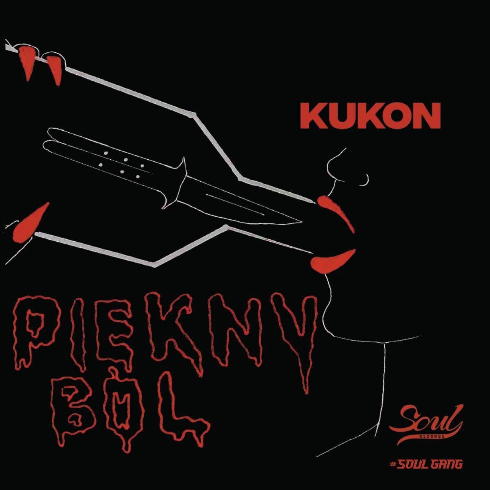
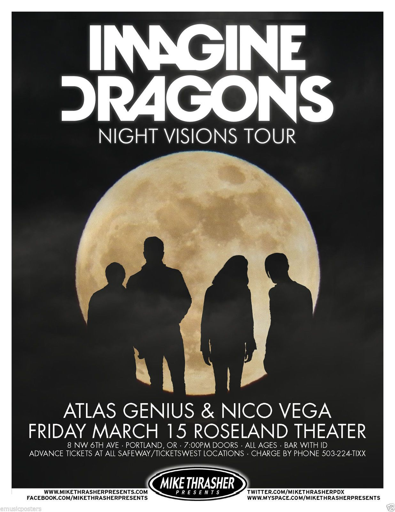

<html>
    <head>
        <title>
        <hr/>
           <b>Moje zainteresowania</b>
        <hr/>
        </title>
    </head>
</html>
<body style="background-color: rgb(117, 93, 93); color: rgb(26, 3, 3);">
    <h1> Strona domowa Wiktorii Grunert</h1>
    <p>Mój ulubiony polski artysta to <b>Kukon.</b></p>
    <!-- znacznik p tworzy nowy paragraf-->
    <hr/>
    <p>
        Kukon, właściwie Jakub Konopka (ur 20 lipca 1996 roku w Biłgoraju) – polski raper i autor tekstów. <br/>
        Zdobywca platynowej płyty za album „Rough N'Gentle ” i kilku złotych płyt.<br/>
        Swój pierwszy singiel z płyty „Piękny Ból” opublikował 14 lutego 2018. <br/>
        Album uzyskał bardzo dobre recenzję i został pozytywnie przyjęty przez słuchaczy[9].<br/> 
        14 października 2023 roku, Kukon wziął udział w wydarzeniu Red Bull SoundClash OKI vs. KUKON, organizowanym w Atlas Arenie w Łodzi. <br/>
        Rywalizujący ze sobą raperzy prezentowali najpopularniejsze utwory w akompaniamencie instrumentów na żywo. <br/>
        Kukon wygrał tę konkurencję dzięki uzyskaniu większej ilości głosów widowni. <br/>
        O wygranej decydował wynik mierzony w decybelach, któremu raperowi po jego show towarzyszył większy hałas publiczności.
    <!-- znacznik br przełamuje linie-->
    </p>
    <hr/>
    
    <p><b>Imagine Dragons</b> to mój ulubiony zespół.
        Imagine Dragons – amerykański zespół popowy założony w 2008 w Las Vegas w Nevadzie.<br/>
        Dan Reynolds poznał gitarzystę Wayne’a Sermona w 2008 r. w Utah, gdzie Dan chodził do szkoły, a Wayne mieszkał po skończeniu szkoły muzycznej. <br/>
        Skład kapeli został uformowany w Las Vegas. W jej skład wchodzili Dan Reynolds, Wayne „Wing” Sermon, Ben McKee, Andrew Tolman i Brittany Tolman. <br/>
        Członkowie kapeli żyli razem w Las Vegas, gdzie nagrali i wydali swoje pierwsze trzy EP'ki.
    </p>
    <hr/>
    
    <p>
        Moje ulubione filmy to:
        <ul>
            <li>Zmierzch</li>
            <li>Forrest Gump </li>
            <li>Igrzyska smierci</li>
    </p>